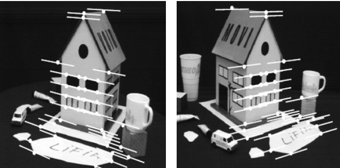

SfM with Uncalibrated Cameras
While can and is used with known intrinsic camera parameters, it's big advantage over other methods is that it can be used with uncalibrated cameras by using the fundamental matrix instead of the essential matrix.
The Fundamental Matrix
So far, we have assumed to know the camera intrinsic parameters and we have used normalized image coordinates to get the epipolar constraint for calibrated cameras:
We can modify the last equation to create the fundamental matrix \(F\):
The 8-Point Algorithm for the Fundamental Matrix
The same 8-point algorithm to compute the essential matrix from a set of normalized image coordinates can also be used to determine the fundamental matrix:
However, now the key advantage is that we work directly in pixel coordinates.
Info
The 8 point algorithm works for both calibrated and uncalibrated cameras, however the 5 point algorithm only works for calibrated cameras.
Similarly to solving the problem with the essential matrix we need to use SVD to solve the following:
Problem with 8-Point Algorithm
When using SVD to solve the equation above, we have poor numerical conditioning, making our solution very sensitive to noise. This can fixed by rescaling the input data, as shown in the example below:
Example
It can be common to have the input data as shown below. The differences in magnitude between the columns is readily visible in the matrix below:
Such differences in magnitude means that solving by least-squares (SVD) will yield poor results.
Normalized 8-Point Algorithm
This can be fixed using a normalized 8-point algorithm [Hartley, 1997]1, which estimates the Fundamental matrix on a set of normalized correspondences (with better numerical properties) and then un-normalizes the result to obtain the fundamental matrix for the given (un-normalized) correspondences.
Idea: Transform image coordinates so that they are in the range \(\sim[-1, 1] \times [-1, 1]\).
Rescale & Shift Method
The most common method is to apply the rescale and shift method (shown below).


Zero-Centroid Method
In the original 1997 paper1, Hartley proposed to rescale the two point sets such that the centroid of each set is 0 and the mean standard deviation \(\sqrt{2}\) (equivalent to having the points distributed around a circled passing through the four corners of the \([-1, 1]\times[-1, 1]\) square).
This can done for every point as follows:
where \(\mu = (\mu_x, \mu_y) = \frac{1}{N}\sum_{i=1}^{n}p^i\) is the centroid and \(\sigma = \frac{1}{N}\sum_{i=1}^{n}\|p^i - \mu\|^2\) is the mean standard deviation of the point set.
This transformation can be expressed in matrix form using homogeneous coordinates:
The normalized 8-point algorithm can therefore be summarized in three steps:
- Normalize the point correspondences: \(\hat{p}_1 = B_1 p_1\), \(\hat{p}_2 = B_2 p_2\)
- Estimate normalized \(\hat{F}\) with 8-point algorithm using normalized coordinates \(\hat{p}_1\), \(\hat{p}_2\)
- Compute un-normalized \(F\) from \(\hat{F}\).
Can \(R\), \(T\), \(K_1\) and \(K_2\) be extracted from \(F\)?
- In general, no: infinite solutions exist.
- However, if the coordinates of the principal points of each camera are known and the two cameras have the same focal length \(f\) in pixels, then \(R\), \(T\) and \(f\) can determined uniquely.
Comparison between Normalized and Non-Normalized Algorithm

| 8-Point | Normalized 8-Point | Non-linear Refinement | |
|---|---|---|---|
| Avg. Ep. Line Distance | 2.33 px | 0.92 px | 0.86 px |
Error Measures
The quality of the estimated Essential or Fundamental matrix can be measured using different error metrics:
- Algebraic error
- Directional Error
- Epipolar Line Distance
- Reprojection Error


When in the error 0?
- These errors will be exactly 0 only if \(E\) (or \(F\)) is computed from just 8 points (because in this case a non-overdetermined solution exists).
- For more than 8 points, it will only be 0 if there is no noise or outliers in the data (if there is image noise or outliers then it the system becomes overdetermined)
Algebraic Error
This method follows directly from the 8-point algorithm, which seeks to minimize the algebraic error:
From the proof of the epipolar constraint and using the definition of dot product, it can be observed that:
We can see that this product depends on the angle \(\theta\) between \(\overline{p}_2\) and the normal \(n = E p_1\) to epipolar plane. It is non-zero when \(\overline{p}_1\), \(\overline{p}_2\) and \(T\) are not coplanar.
What is the drawback of this error measure?
This method depends on the lengths of \(\overline{p}_1\) and \(\overline{p}_2\), we only care about the angle between \(n\) and \(\overline{p}_2\), and this error metric changes based on the lengths of \(\overline{p}_1\), \(\overline{p}_2\) and the values of \(E\).
Directional Error
This error is defined as the sum of squared cosines of the angle from the epipolar plane:
It is obtained by normalizing the algebraic error:
Epipolar Line Distance
This method is defined as the sum of squared epipolar-line-to-point distances:
This method is faster to compute than the reprojection error because it does not require point triangulation.


Reprojection Error
This method is defined as the sum of squared reprojection errors:
This method is computationally more expensive than the previous three methods because it requires us to first triangulate the 3D points.
However it is the most popular because of its accuracy. The reason is that the error is computed directly with respect to the raw input data, which are image points.